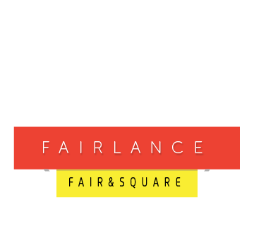

<template>
    <div class ="landing">
        <div class="logo-container">
            
        </div>
        <form role="form" submit.delegate="submit()" class="clearfix">
            <input type="text" value.bind="email" name="email" class="${style}" placeholder="${placeholder}">
            <button type="submit" class="btn btn-default">Submit</button>
        </form>
        <section class="clearfix">
            <article class="summary-box">
                <h2><i class="material-icons">fiber_manual_record</i>Fairlance</h2>
                is a new generation web platform for freelance work, which introduces the concept of Fair Trade into freelance community, ensuring effective and high quality service and professional satisfaction for both employers and employees.
            </article>
            <article class="summary-box">
                <h2><i class="material-icons">fiber_manual_record</i>Fairlance</h2>
                combines best experiences from existing freelance practises with social network assets, enabling freelancers to cooperate, co-work and address the needs of clients better then ever.
            </article>
            <article class="summary-box">
                <h2><i class="material-icons">fiber_manual_record</i>Fairlance</h2>
                aims to establish a new business paradigm based on principles of responsibility and fairness, while pushing the boundaries of online labour market towards new, highly ethical and professional standards.
            </article>
            <article class="summary-box">
                <h2><i class="material-icons">fiber_manual_record</i>Fairlance</h2>
                is a self-evolving, user-friendly and reliable web platform, a booster of creative work and a business incubator.
            </article>
        </section>
        <footer class="clearfix">
            <div class="social-icons">
                <a href="https://www.facebook.com/fairlance" target="_blank" class="fa fa-facebook"></a>
                <a href="https://twitter.com/fairlance_io" target="_blank" class="fa fa-twitter"></a>
                <a href="https://www.linkedin.com/groups/7039061" target="_blank" class="fa fa-linkedin"></a>
            </div>
        </footer>
    </div>
</template>